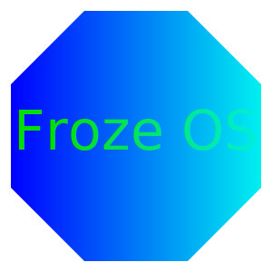

FrozeOS
What's FrozeOS Project?
FrozeOSプロジェクトは最近の無駄に大きくて遅いOSに対抗するためにフルスクラッチでOSを自作しようというプロジェクトです。
このプロジェクトではOSの大きさを最小限にするためにすべてのコードをアセンブリ（アセンブラ）で書こうというカオス（笑）な奴やつです。
まあ一言でいうならOSを作るプロジェクトって感じです。
Open & Free
FrozeOSはオープンソースで公開されています。
https://github.com/froze-os
もちろん有料ではなく無料で、誰でも使えます。
このオープンソース精神（？）もFrozeOSの強みです。
News
ホームページを公開しました。
開発ステータス
サボってる（）
Contact
FrozeOSお問い合わせフォームです。FrozeOSに関連する質問やリクエストなどがあればご気軽にお書きください。
読み込んでいます…
Github